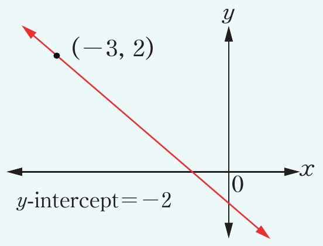
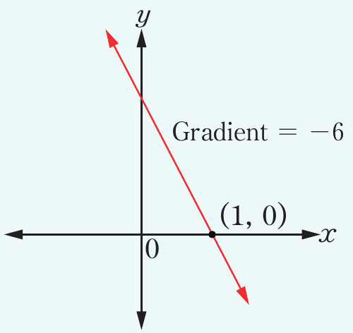
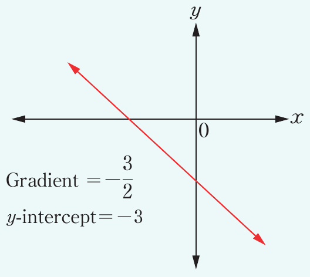
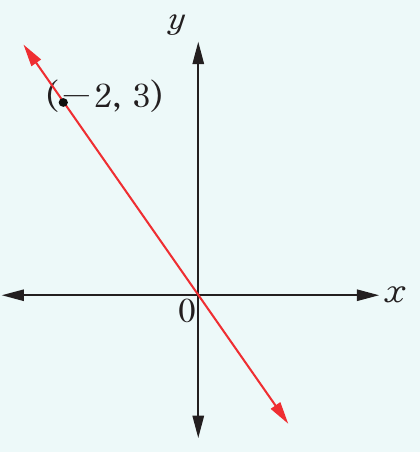

8. Solve graphically each of the following linear simultaneous equations.
(a)
(b)
(c)
(d)
(e)
(f)
9. Find the equation of the line in each of the following graphs.
(a)

(-3, 2) y-intercept = -2
(b)

Gradient = -6 (1, 0)
(c)

y-intercept = -3
(d)

(-2, 3)
10. Find graphically the solution of the following system of linear simultaneous equations.
(a)
(b)
(c)
(d)